Can someone make the same thing from your receipt?
A receipt lists a run's prompts and settings. If you hand it to someone, do they get something like what you got? We ran one test.
The test
Claude Code (Opus 5.5, medium effort) made a pixel-art aquarium from three prompts:
- A pixel-art aquarium in the browser: a tank with sand, some plants, and fish swimming around. One html file.
- Add three kinds of fish: a small orange clownfish, a long blue eel that wiggles as it swims, and a pufferfish that puffs up when you click it. Bubbles rise from a treasure chest in a corner.
- Add a day/night cycle about a minute long: the water goes dark blue at night, a moon shows above the water, and the fish slow down. Add a feed button: flakes fall and the fish swim to them.
Then, each in an empty folder, five runs got the receipt's three prompts again. Five more got only the first prompt, as a control. Before any of them ran, we wrote down the 12 things the prompts ask for. Each output's code was checked against that list without knowing which run it came from.
What happened
All five reruns from the receipt had all 12. The runs with only the first prompt had 5.5 to 6.5: an aquarium with fish, but no eel, pufferfish, day and night or moon. A rerun cost about what the original did: $1.41 to $1.80 at API prices and 7 to 10 minutes, against $1.72 and 9 minutes.
Each card shows the brightest frame above the darkest from a minute of the page running. Click a picture to see it full size.


The checklist
| What the prompts ask for | rerun 1 | rerun 2 | rerun 3 | rerun 4 | rerun 5 | control 1 | control 2 | control 3 | control 4 | control 5 |
|---|---|---|---|---|---|---|---|---|---|---|
| 1. pixel art | ✓ | ✓ | ✓ | ✓ | ✓ | ✓ | ✓ | ✓ | ✓ | ✓ |
| 2. sand | ✓ | ✓ | ✓ | ✓ | ✓ | ✓ | ✓ | ✓ | ✓ | ✓ |
| 3. plants | ✓ | ✓ | ✓ | ✓ | ✓ | ✓ | ✓ | ✓ | ✓ | ✓ |
| 4. fish swimming | ✓ | ✓ | ✓ | ✓ | ✓ | ✓ | ✓ | ✓ | ✓ | ✓ |
| 5. orange clownfish | ✓ | ✓ | ✓ | ✓ | ✓ | ✓ | ✓ | ✓ | ✓ | ✓ |
| 6. long blue eel that wiggles | ✓ | ✓ | ✓ | ✓ | ✓ | – | – | – | – | – |
| 7. pufferfish that puffs when clicked | ✓ | ✓ | ✓ | ✓ | ✓ | – | – | – | – | – |
| 8. bubbles from a treasure chest | ✓ | ✓ | ✓ | ✓ | ✓ | – | – | – | – | ✓ |
| 9. day/night cycle, about a minute | ✓ | ✓ | ✓ | ✓ | ✓ | – | – | – | – | – |
| 10. moon at night | ✓ | ✓ | ✓ | ✓ | ✓ | – | – | – | – | – |
| 11. fish slower at night | ✓ | ✓ | ✓ | ✓ | ✓ | – | – | – | – | – |
| 12. feed button: flakes fall, fish swim to them | ✓ | ✓ | ✓ | ✓ | ✓ | ½ | ½ | ½ | ½ | ½ |
| total of 12 | 12 | 12 | 12 | 12 | 12 | 5.5 | 5.5 | 5.5 | 5.5 | 6.5 |
½ means partly: the controls let you feed the fish by clicking the water, with no button. Control 2 put a castle where the chest would be.
Try it
This is the original's receipt: open it. To make the aquarium again from it:
uvx --from prompt-receipts receipt --replay 'receipt link'
uvx --from prompt-receipts receipt --replay 'https://musharna.github.io/prompt-receipts/r/#r1.vVbNbuM2EL7rKeYQIDZqKZIcO3F2L7tpD0VjbFD0BSiJsghLpEpS8eZJ-ii9ty_WbygntpMA3RZpfUhEit_8fPPNUD_LUqre08NVkmX0x-9024qhknRr8CdPsiRfLXk7m9OX0lOe5ssZrW7mOd2v6Yfvf-F32iR0WeQiLrNcRh2QLeFXBkux6QcXL-IFn5R1baynTlZq6CKvOskHKUupU5omI3Rn7FbpDa14c8qwOfXWdL13VOM_4FFpnA_Qsyy5ymlyFPW5I7PT5I0XLQlPn-5_BFyV0n0g30hqlZaOCtmaHYmqoqHHWVJ-GtHT70XkhxdESveDp1e_y5T-_I3OLpM0vVhj_fEsTdLsGFiKEs6tFNXR5uoq2wZgmuQjkB-z1WvgziovaZJRMw27y_kIvH7yyMBFegw0g38d62LvME8PwCxJ80h-9VY4LH2jdOB_EYoC-ndCed4wGvF7q0Dfx4xcNLIKCFPcKlRkv9NLC2zbKsN12ErtaHJ2sZ7OxvrdIZW7uzWli2y5lDn09KytqGAYfNFafKW-FfqGBNUt6lhLOYPUPJWNsBtZBS92gGwezWBJlKUZtIe_SjxOo71bLhghvzVNAteBzCqICvQwGxHLLVAzzwA2Lc60reOgXCNbLE3XCV25wIQsKOWHUUTfLRdXFOehbzKqhWoRFsOjGo8uSJv4MZTPS03GErTvcWySNL5rQyTLy8VocEb5gn76zHsi-OrFRkZW9i1zjjbYP84om6X5FXdK5SKIODacq9uCPAeONJRiau5Z8YCgRNHK4Gh9e394myIzrWXp93z07bBReg_H2g0FvGs0XRo1xmxDOuFlazbgP-pkZ-zjYVNU2HTSs1bQYI-9cO5e2k45ByG4yA9W7zl5niDwc_kkMwh4uRrb_bgO-Rt1GFk9Fjt9ol59lW0sMF_Er4OwmDBcfG75wpqdk5al5IXe0k75hhyMzcgZzCDWmYcr7MCwa04Mu53qOpaksBBYldAXZMu1CzEkh7N5SGu5T2t-lNZiVMjyX-WFEeUbKyWhKXEKleMQORfXwRIkJfRGYmZh6vEbpIFiIN6iHSRJDFTfCH9ic6c2G9Yn-l35kOA-eUH9UNfSsp0AC2vHM3LXQL7oNDhS5Ra45MTk56Eo2KRVTo5dDq4x7dxgEVsjMRxAh0C2Vkt7hJ0H1lZvsZYHSvIT1hbfzpogTIILrTYNZsZjiS4UBTe9YB-Dl4GlmyCQnfAYJhuDBCqBcRCoQ_YBPDuxDLTBWHMNJMUGH-TBwkgiLwOBjq-YCmVJ9vFghFVUDN4bfXNiFANuC9811_PUBGrD1xM2uiPS-P3YTocbjPfCtRiCitTTPbO6rgu5WhXiWi5pMl6kMA7NWIxrjXvPSh6jz_cexT2dv2c7_V0LnVMcj1f_y0-GOD75YsC6fx4oAfLGmHlxi3M2cYmE3qeP3ql3_mm__G8UvVvTvFujfGNz_EcMTdibE6zq_Scoh_B0y33A3YcFgsXF7mUHw8KHCgqNT0w-xz0RPlueDY3fZdO_AA'
That shows the three commands and stops. Add --run to run them in a new empty folder; when they finish you get the new run's own receipt. It runs Claude Code on your machine with the same permission setting the original used, which lets it act without asking, and it costs about $1.70 at API prices.
The first try: a crystal
Before the aquarium we tried a 3D amethyst crystal. The first prompt alone already made a crystal cluster most of the time, and the other two prompts were fixes for the original's own drafts ("dark plastic pins", "white cake frosting"), which mean less on a different draft. Looking at them without labels, 4 of 5 reruns from the receipt were close to the original, and so were 3 of 5 runs of the first prompt alone. That can't tell a receipt from a prompt, so the aquarium's prompts ask for things you can check in any draft.

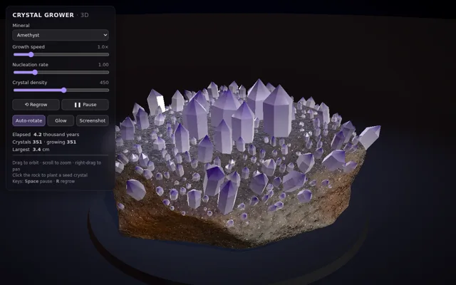

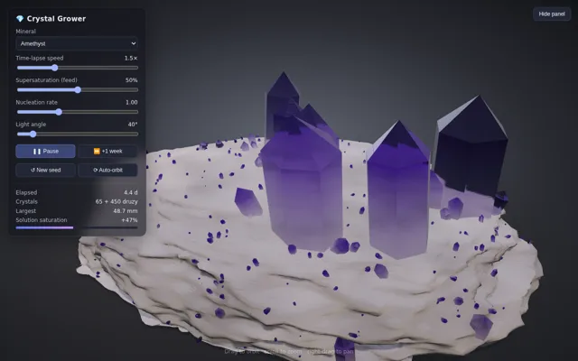

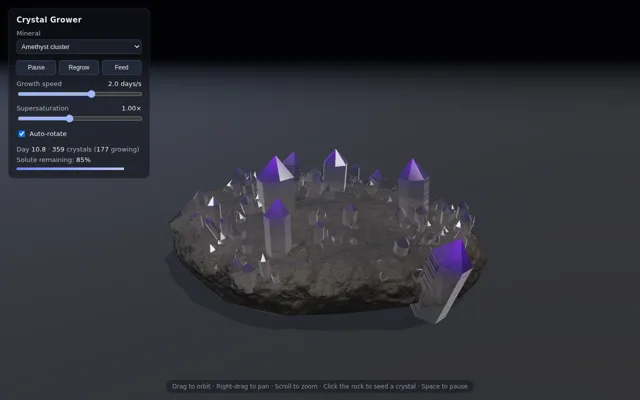

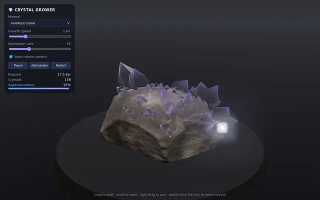

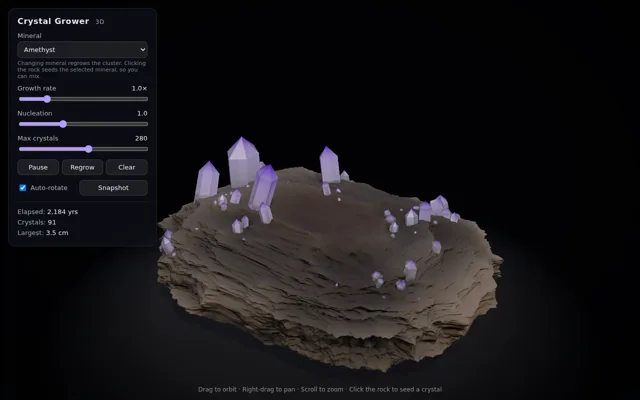

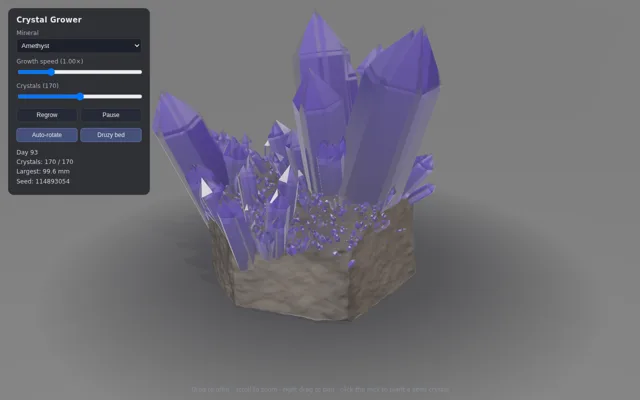

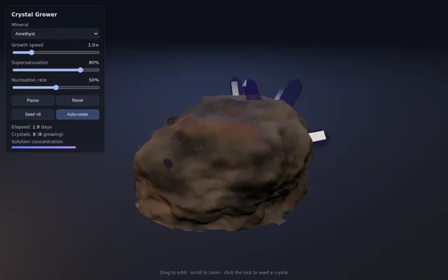

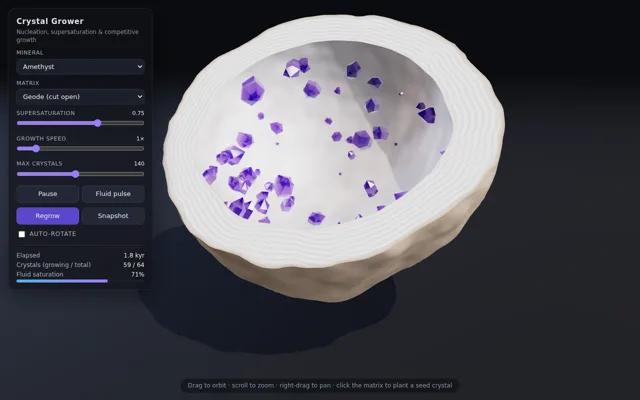

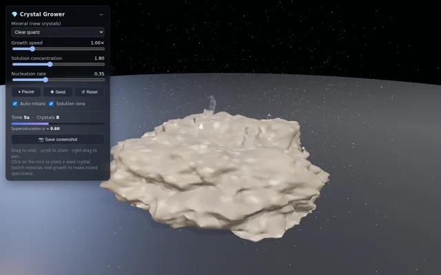

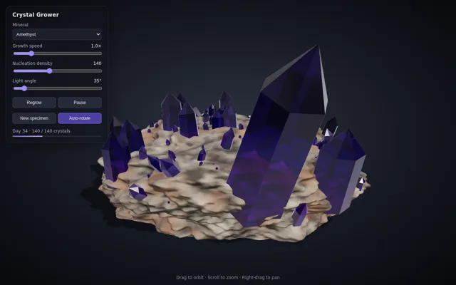

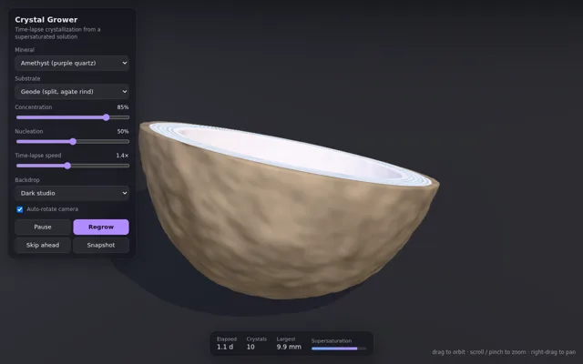
What this doesn't show
It's one set of prompts, one model and one machine. The checklist was scored from the code, not from how each one looks; the pictures above are there so you can judge that yourself. Nobody else has tried a receipt yet.